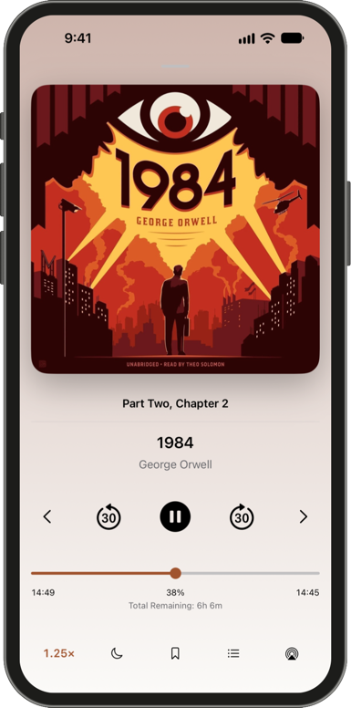
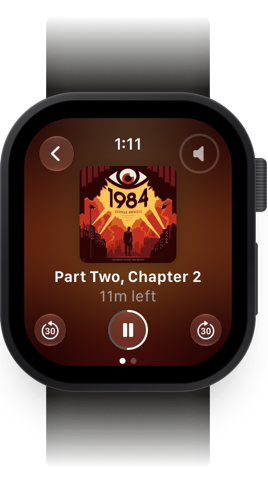

Player de audiolivros para iPhone, iPad e Apple Watch
Para os audiolivros que você já tem.
Ouça seus arquivos de audiolivro M4B, MP3 e outros sem DRM com os capítulos, e continue de onde parou em todos os aparelhos.


Como funciona Traga seus próprios audiolivros.
-
Reúna seus arquivos
Audiolivros sem DRM de lojas como Libro.fm e Downpour, CDs que você extraiu ou clássicos em domínio público do LibriVox.
-
Importe
Do app Arquivos, do iCloud Drive, por AirDrop ou de um computador. Um livro em várias partes vira um só.
-
Ouça onde quiser
Seu ponto, suas estantes e seus marcadores acompanham você no iPad, no Apple Watch e no carro pelo seu próprio iCloud. Sem conta, sem servidor.
Toca M4B, M4A, MP3, AAC, FLAC, WAV, AIFF, Ogg Opus e MP4. Os arquivos AAX da Audible só tocam no app da Audible.
Reprodutor Feito para livros longos.
-

Capítulos
Pule de capítulo em capítulo e veja quanto você já ouviu de cada um. A lista completa está a um toque.
-

Velocidade
De 0,5× a 6× em passos de 0,05, com o tempo restante em cada velocidade.
-

Timer de repouso
De cinco minutos ao fim do capítulo, com a contagem regressiva na Tela Bloqueada.
-

Marcadores
Guarde um momento com um toque, e uma nota dizendo por quê.
E ainda saltos de 5 a 45 segundos, um breve retrocesso ao pausar e uma reprodução que volta depois de ligações e alarmes.

Biblioteca Estantes, como as de casa.
Estantes dentro de estantes. Sanderson, depois Cosmere, depois Mistborn. Crie quantos níveis sua coleção pedir.
Encontre qualquer livro. Busque por título, autor e estante, ou mostre só o que você está ouvindo.
Apple Watch Deixe o celular em casa.
Mande um livro para o Apple Watch antes de correr, ou deixe o iPhone no bolso e controle tudo pelo pulso. Como funciona no Apple Watch



CarPlay e Siri Mãos no volante.
Continue de onde parou ou navegue pelas estantes. Depois, é só pedir.
- “Volte 30 segundos.”
- “Próximo capítulo.”
- “Pare no fim deste capítulo.”

E mais.
-
Atalhos
Ações para reprodução, capítulos, velocidade, marcadores e o timer de repouso.
-
Tela Bloqueada
O timer faz a contagem regressiva ali e na Dynamic Island.
-
Widgets
O que está tocando na Tela de Início, e controles na Central de Controle.
-
Estatísticas
Por semana, mês e ano, com uma retrospectiva todo janeiro.
-
Cada detalhe
Títulos, autores e capas do Fotos ou do Arquivos, do seu jeito.
-
Exportar
Sua biblioteca inteira para o Arquivos, com marcadores e notas.
-
Spotlight
Encontre um livro pela busca da Tela de Início.
-
Oito idiomas
Com um ajuste de idioma próprio.
Privacidade Sem conta. Sem anúncios. Sem rastreamento.
Sem assinatura para ouvir os livros que você tem. Sua biblioteca fica nos seus dispositivos e no seu próprio iCloud, e as estantes que você oculta ficam protegidas pelo Face ID.
Na App Store, o rótulo de privacidade do Novelwave indica “Dados não coletados”. Leia a política de privacidade
Avaliações na App Store O que dizem os ouvintes.
-
★★★★★
“I open the app and all my audiobooks are right in front of me, ready to play, with all the listening tools I need and 0 clutter.”
DaveAsh90 · Estados Unidos
-
★★★★★
“This app does everything it needs to and nothing it doesn’t. A sleek, simple interface and enough playback customisation to allow many different listening styles.”
Alastair Stone · Reino Unido
-
★★★★★
“I tried a similar app, but the speed settings & sleep timer options for Novelwave beat the competition. (Stop at end of chapter = genius!)”
hollyreviewsapps · Estados Unidos
-
★★★★★
“I tried several other apps and this one is by far the most responsive and reliable.”
nonetaat · Estados Unidos
-
★★★★★
“Just enough customization and features to make the player disappear into the background while enjoying the audiobook.”
Throog · Estados Unidos
-
★★★★★
“Indie dev, zero data collection and telemetry, responsive to feedback.”
Massaholic · Estados Unidos